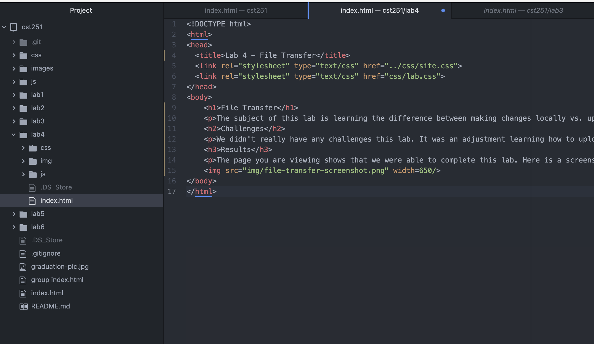

The subject of this lab is learning the difference between making changes locally vs. uploading to a server. In order to do this, we must follow the "File Transfer Protocol".
We didn't really have any challenges this lab. It was an adjustment learning how to upload to a server the first time. Since we have already done this before, it was pretty easy to do it for this lab.
The page you are viewing shows that we were able to complete this lab. Here is a screenshot of the code of this page:
